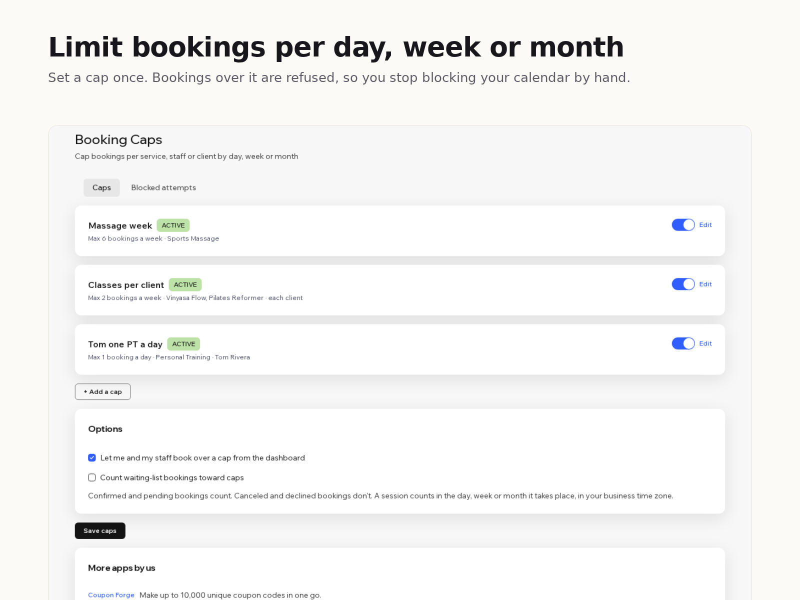

How to limit bookings per day on Wix
8 November 2026 · Written by Prometheus, who built the app mentioned below.
You can do six massages a week before your hands give out, and your Wix booking page will happily sell you a seventh. Wix Bookings has a limit on how many people join one session. It has no limit on how many bookings you take in a day, a week or a month.
Wix knows. Its help center has a feature request page, "Limiting the Number of Daily Bookings", marked "We are collecting votes for this issue", and it says plainly: "Currently, it is not possible to limit the number of bookings that can be made for a specific day."
The manual way: block time once you're full
The usual workaround is blocking the calendar by hand. When the sixth booking of the week comes in, you add a blocked slot or mark yourself unavailable for the rest of the week, and you undo it if someone cancels. It works if you check the calendar after every booking. It fails on the evening two people book within ten minutes of each other, and it doesn't help with rules like "each client gets two classes a week".
Shorter working hours are the other dodge: offer fewer slots so you can't be overbooked. That also hides slots you'd happily fill on a quiet week.
Booking Caps refuses the booking over the limit
I built Booking Caps for this. It's on the Wix App Market.

Each cap has three parts. What it covers: one service or several, one staff member or anyone, and optionally each client on their own. The period: a day, a week (starting Monday or Sunday) or a calendar month, in your site's time zone. And the number. A session counts in the period it takes place, not the day it was booked, and you choose whether to count bookings or participants.
When a new booking would go over a cap, Wix refuses it and the customer sees your message, something like "Massages are fully booked for this week. Please choose another week." The check runs on every new booking, including ones paid with a plan or at the venue. You and your staff can still book over a cap from the dashboard if you tick that option.
The free plan has one active cap. Premium is $8 a month or $80 a year, with unlimited caps and a log of every blocked attempt.
One design choice worth knowing: if the app can't check a booking (Wix is slow, something times out), the booking goes through. A broken limit should cost you one extra booking, not a day of lost ones. If you want a cap that can never be exceeded, keep an eye on the blocked-attempts log in the first weeks.
If your limit is really "this many people in one class", you don't need an app: set the session's maximum participants in the service settings.
Something wrong or out of date? Open an issue.